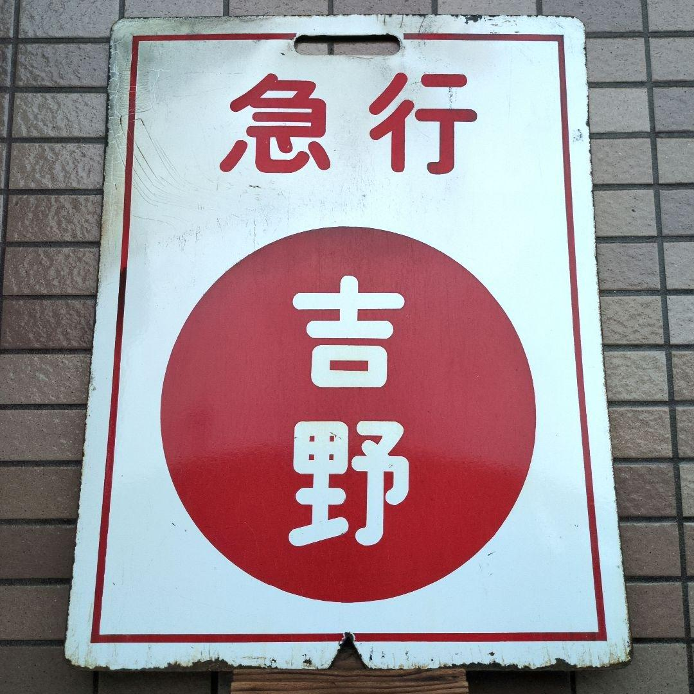
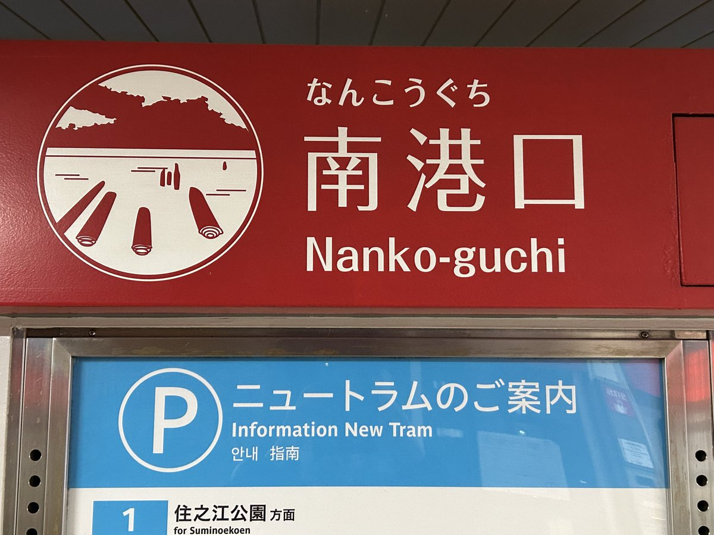
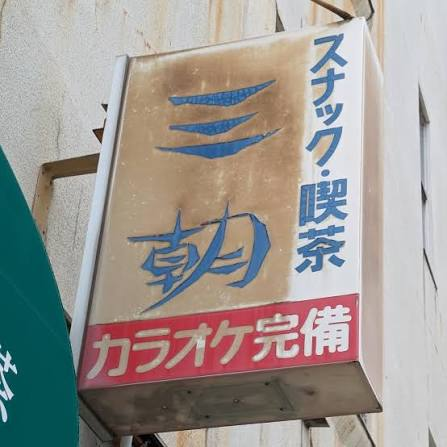
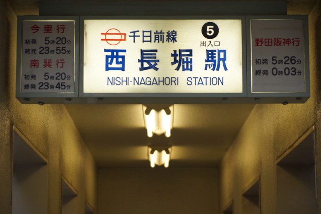
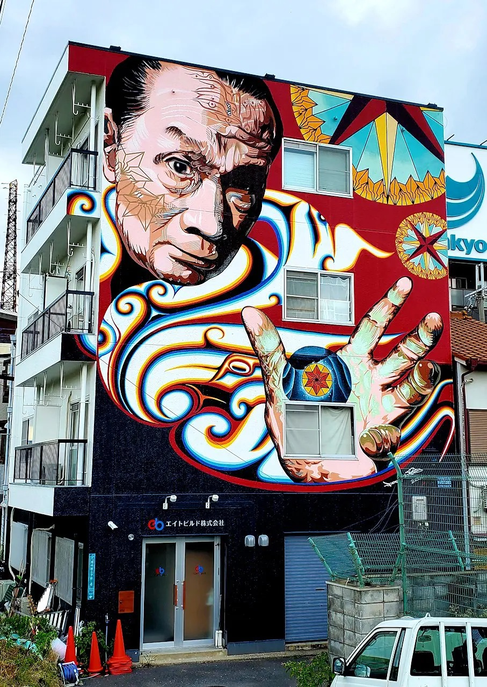
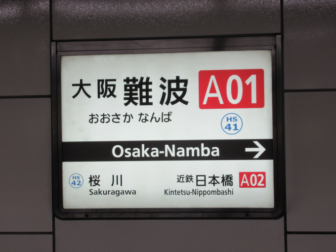

01 — how it works
sound, hidden in the design.
OtO は Figma のプラグイン。フレームを選んで再生すれば、その配置がそのまま音になる——実機の中で。新しく作曲するんじゃない。デザインの中にもとから隠れていた音を、見つけて鳴らすだけ。再生ヘッドが要素を横切るたび、それが聴こえる。

02 — concept
the street is playing.
看板の大きさ＝音量。文字の高さ＝音程。間（ま）＝休符。日本の街のグラフィックを撮りためて、OtO に流し込む。街は、最初から歌っていた。





03 — sound
tuned & raw.
同じ一枚のデザインが、二つの顔を持つ。整えれば曲、剥がせば設計図の生の鼓動。
TUNED
整音
スケールに乗せ、グリッドに量子化した"曲"。外れない・心地よい。誰かに渡す、リリースの面。
RAW
生音
Y座標そのままの連続ピッチ（微分音）を、短い粒で。スケールに丸めない素の音を、再生ヘッドがスキャンして読む。発見の核。
デザインにある音楽を、体験せよ。
04 — about
built by a techno artist.
デザインと音楽、両方を本気でやってきた人間がつくった道具。
だから "おもちゃ" で終わらない。

99letters
「99letters」は、滋賀を拠点に活動する木下貴博のテクノ名義。箏や尺八といった日本の伝統楽器をサンプリングし、ノイズと空間処理で漆黒のテクノに変える——"雅楽テクノ"とも称される、ほかにない音。
2010年代はハウスのプロデューサーとして数々のレコードを重ね、2021年に 99letters 名義へ回帰。『解剖図鑑』は Bandcamp Daily の Album of the Day、『地獄』は英 Phantom Limb、『魔訶不思議』は Disciples からリリース。『翻訳演奏』『己』と作品を重ね、The Wire・Mixmag・Resident Advisor・Bleep・Boomkat・NTS Radio などが取り上げてきた、海外で評価される現役アーティスト。
その人間が"自分のデザインを音にするため"に作ったのが OtO。サンプラー・EQ・メーター・書き出しまで揃えながら、芯は「作曲じゃなく、発見」。判断は人、翻訳はAI——代表作『翻訳演奏』そのままに。最後の差は、機能じゃなく耳に出る。
your design is already singing.